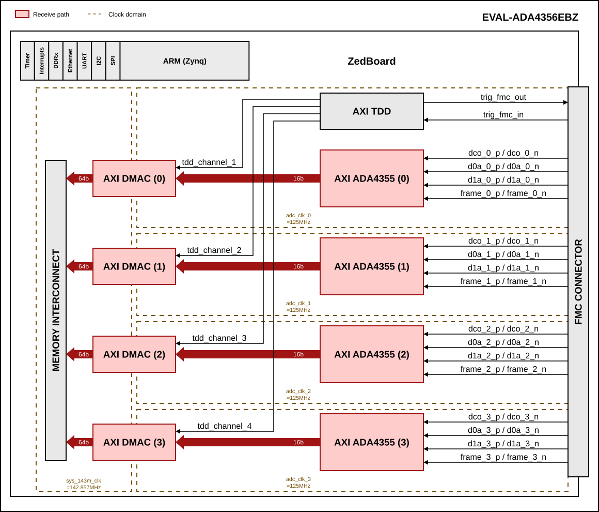
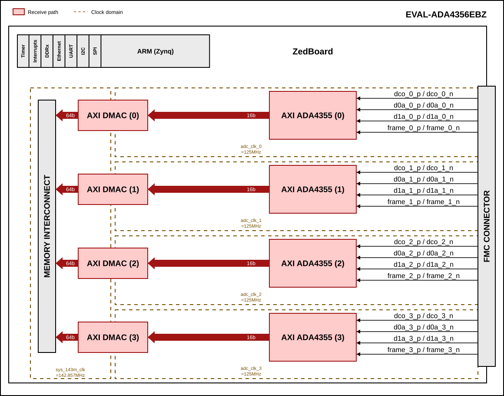

QUAD-ADA4356 HDL project
Overview
The EVAL-ADA4356EBZ carries four ADA4356 current-input µModule receivers and an AD9517-4 clock generator on one FMC board. Each ADA4356 combines a programmable transimpedance amplifier, a low-pass filter selectable between 100 MHz and 1 MHz and a 14-bit, 125 MSPS ADC, and outputs its samples over two LVDS data lanes, a frame clock (FCO) and a 500 MHz DDR data clock (DCO).
The HDL design captures the four ADCs in parallel. Each ADA4356 has its own AXI ADA4355 core and its own AXI DMAC, so each channel is captured in its own DCO clock domain and written to memory independently. The AD9517-4 supplies a separate sample clock to each ADA4356.
In the default configuration an AXI TDD controller generates the external trigger output and starts the four DMA transfers, for triggered (LiDAR-style) acquisition. See Configuration modes.
Supported boards
EVAL-ADA4356EBZ
Supported devices
Supported carriers
Evaluation board |
Carrier |
FMC slot |
|---|---|---|
EVAL-ADA4356EBZ |
FMC LPC |
Block design
Warning
The VADJ for the ZedBoard must be set to 2.5 V.
Block diagram - TDD_SUPPORT=1
The data path and clock domains of the default configuration are depicted in the below diagram:


Block diagram - TDD_SUPPORT=0
Without the TDD controller, each DMA transfer starts as soon as software submits it:


The following table applies to both diagrams.
Block name |
IP name |
Documentation |
Additional info |
|---|---|---|---|
AXI ADA4355 |
4 instances, |
||
AXI DMAC |
4 instances, |
||
AXI TDD |
|
||
MEMORY INTERCONNECT |
|
— |
Created by |
Clock scheme
Each ADA4356 receives its own sample clock from the AD9517-4 and sources its own DCO (500 MHz). Each AXI ADA4355 divides its DCO by 4 to its
adc_clk(125 MHz), so the design has fouradc_clkdomains of the same frequency but independent phase.sys_143m_clk(PSFCLK_CLK2) is the DMA clock. 142.8 MHz is requested, the PS delivers 1000/7 = 142.857 MHz.sys_200m_clk(PSFCLK_CLK1) is the IDELAYCTRL reference clock.sys_cpu_clk(PSFCLK_CLK0, 100 MHz) clocks the AXI-Lite register interfaces.
The DCO of each ADA4356 enters the FPGA on a clock-capable FMC pin:
Instance |
DUT |
DCO clock |
DCO pin |
Clock-capable |
IO Bank |
|---|---|---|---|---|---|
axi_ada4355_adc_0 |
A |
FMC_LA01_CC |
N19 |
SRCC |
34 |
axi_ada4355_adc_1 |
B |
FMC_LA00_CC |
M19 |
MRCC |
34 |
axi_ada4355_adc_2 |
C |
FMC_LA17_CC |
B19 |
MRCC |
35 |
axi_ada4355_adc_3 |
D |
FMC_LA18_CC |
D20 |
SRCC |
35 |
Only an MRCC pin can drive a BUFMRCE, so only B and C could ever share their DCO with another bank; each instance clocks its own capture from its own DCO.
Limitations
The four DMAs share the 64-bit
S_AXI_HP1port. At 142.857 MHz it carries 1143 MB/s, for a demand of 4 x 125 MSPS x 2 B = 1000 MB/s, so there is only 14% margin: adding channels or raising the sample rate needs the DMAs to be split across more HP ports.The four
adc_clkdomains are independent, so the channels are not sample-aligned in hardware. WithTDD_SUPPORT=1,axi_tdd_0runs on theadc_clkofaxi_ada4355_adc_0and itssyncoutputs reach DMAs 1 … 3 without a synchronizer, so their transfers can start one sample apart from DMA 0. The inter-channel offset is measured and removed in software.
Configuration modes
The TDD_SUPPORT configuration parameter selects how the four DMA transfers
are started. It is set at build time, because SYNC_TRANSFER_START of
AXI DMAC cannot be changed at runtime:
1 - (default) an
axi_tddcontroller drivestrig_fmc_outand starts the four DMAs. Each submitted transfer waits for its TDD channel to pulse, so one buffer is captured per trigger.0 - no
axi_tdd. Each DMA transfer starts as soon as software submits it.trig_fmc_outis tied low andtrig_fmc_inis unused.
Neither mode is cyclic: one transfer is one buffer.
CPU/Memory interconnects addresses
The addresses are dependent on the architecture of the FPGA, having an offset added to the base address from HDL (see more at CPU/Memory interconnects addresses).
Instance |
Zynq |
|---|---|
axi_ada4355_adc_0 |
0x44A0_0000 |
axi_ada4355_adc_1 |
0x44A1_0000 |
axi_ada4355_adc_2 |
0x44A2_0000 |
axi_ada4355_adc_3 |
0x44A3_0000 |
axi_ada4355_dma_0 |
0x44A4_0000 |
axi_ada4355_dma_1 |
0x44A5_0000 |
axi_ada4355_dma_2 |
0x44A6_0000 |
axi_ada4355_dma_3 |
0x44A7_0000 |
axi_tdd_0 * |
0x44A8_0000 |
Legend
*instantiated only for TDD_SUPPORT=1
I2C connections
I2C type |
I2C manager instance |
Alias |
Address |
I2C subordinate |
|---|---|---|---|---|
PL |
iic_fmc |
axi_iic_fmc |
0x4162_0000 |
3 x MAX7320 (0x59, 0x5D, 0x5E), AD7291 (0x2F) |
PL |
iic_main |
axi_iic_main |
0x4160_0000 |
— |
The MAX7320 output expanders drive the per-channel gain (GSEL) and filter (FREQ_SEL) selects and the current-divider enables. They are on the FMC I2C bus, not on FPGA GPIOs.
SPI connections
The PS SPI 0 hard chip selects are not routed to the FMC; its five chip selects are GPIOs (see GPIOs).
SPI type |
SPI manager instance |
SPI subordinate |
CS |
|---|---|---|---|
PS |
SPI 0 |
ADA4356 (A, B, C, D) |
GPIO |
PS |
SPI 0 |
AD9517-4 |
GPIO |
PS |
SPI 1 |
APD bias digital potentiometer |
0 ( |
GPIOs
The Software GPIO number is calculated as follows:
Zynq-7000: if PS7 is used, then offset is 54
GPIO signal |
Direction |
HDL GPIO EMIO |
Software GPIO |
Description |
|---|---|---|---|---|
(from FPGA view) |
Zynq-7000 |
|||
apd_supp_en |
INOUT |
37 |
91 |
APD supply enable |
csb_ad9510 |
INOUT |
36 |
90 |
AD9517-4 SPI chip select, active low |
csb_dutd |
INOUT |
35 |
89 |
ADA4356 D SPI chip select, active low |
csb_dutc |
INOUT |
34 |
88 |
ADA4356 C SPI chip select, active low |
csb_dutb |
INOUT |
33 |
87 |
ADA4356 B SPI chip select, active low |
csb_duta |
INOUT |
32 |
86 |
ADA4356 A SPI chip select, active low |
csb_ad9510 is the schematic net name; the device is an AD9517-4.
trig_fmc_in and trig_fmc_out are not GPIOs; they connect to
axi_tdd_0.
Interrupts
Below are the Programmable Logic interrupts used in this project.
Instance name |
HDL |
Linux Zynq |
Actual Zynq |
|---|---|---|---|
axi_ada4355_dma_3 |
13 |
57 |
89 |
axi_ada4355_dma_2 |
12 |
56 |
88 |
axi_ada4355_dma_1 |
10 |
54 |
86 |
axi_ada4355_dma_0 |
9 |
53 |
85 |
Interrupts 11, 14 and 15 are already used by the ZedBoard base design
(axi_iic_fmc, axi_iic_main and axi_hdmi_dma).
Building the HDL project
The design is built upon ADI’s generic HDL reference design framework. ADI distributes the bit/elf files of these projects as part of the ADI Kuiper Linux. If you want to build the sources, ADI makes them available on the HDL repository. To get the source you must clone the HDL repository.
Linux/Cygwin/WSL
Example for building with the default configuration (TDD_SUPPORT=1):
~$
cd hdl/projects/quad_ada4356/zed
~/hdl/projects/quad_ada4356/zed$
make TDD_SUPPORT=1
Example for building without the TDD controller:
~/hdl/projects/quad_ada4356/zed$
make TDD_SUPPORT=0
The result of the build, if parameters were used, will be in a folder named by the configuration used. If the following command was run
make TDD_SUPPORT=0
then the folder name will be: TDDSUPPORT0.
A plain make builds the default configuration, but in the zed folder
itself, because the folder name comes only from the parameters given on the
command line.
Check Configuration modes for more details.
A more comprehensive build guide can be found in the Build an HDL project user guide. To create the boot image, see Build the boot image BOOT.BIN.
Software considerations
Each AXI ADA4355 holds its BUFR divider and its ISERDES in reset from FPGA configuration until software sets
ADI_REG_RSTNbit 1 (MMCM_RSTN), after the AD9517-4 is locked. The standard AXI ADC probe sequence does this; other software must setADI_REG_RSTNto 0x3 before reading data. See AXI ADA4355.With
TDD_SUPPORT=1, all four DMA transfers must be submitted beforeaxi_tdd_0fires, and itssync_start_enablemust be armed, or no transfer starts.The four channels have independent clock domains, so the whole-sample offset between them changes from boot to boot. Measure and remove it in software after every boot, and again after changing the gain or filter mode.
Resources
More information
Support
Analog Devices, Inc. will provide limited online support for anyone using the reference design with ADI components via the EngineerZone FPGA reference designs forum.
For questions regarding the ADI Linux device drivers, device trees, etc. from our Linux GitHub repository, the team will offer support on the EngineerZone Linux software drivers forum.
For questions concerning the ADI No-OS drivers, from our No-OS GitHub repository, the team will offer support on the EngineerZone microcontroller No-OS drivers forum.
It should be noted, that the older the tools’ versions and release branches are, the lower the chances to receive support from ADI engineers.